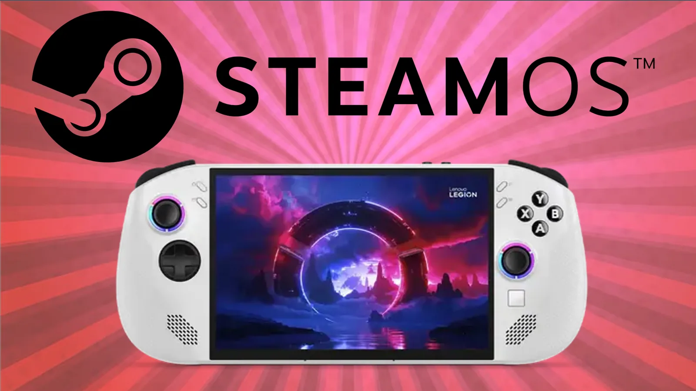

Tutorial Erick Islas Tech
SteamOs en Legion Go S
Guía práctica para configurar, instalar o resolver detalles relacionados con consolas portátiles, gaming y sistemas alternativos.

Guía de apoyo
En este tercer video de la Legion Go S de Lenovo instalamos el sistema operativo de la SteamDeck nos referimos al SteamOS, acompáñame paso a paso a realizar la instalación